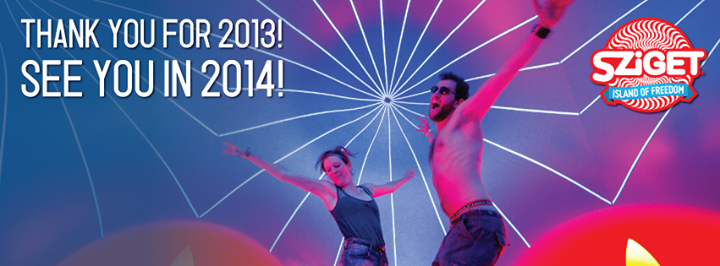

auf
der Donau-Werftiinsel
"Óbudai" in
Budapest,
HÉV-
bzw. S-Bahnhaltestelle: "Filatorigát"
SZIGET
bedeutet Insel und dieses Wort sollte genauso ausgesprochen
werden, wie man das Wort auf Deutsch liest, wobei man wissen
sollte, dass das ungarische SZ identisch ist mit dem
deutschen ß - schließlich wurde das ungarische
Alphabet aus
dem Deutschen erkoren - allerdings über Österreich.
Die
folgende Aufnahme zeigt, wie die Donau aus dem Norden kommend
duch die nördliche Hälfte von Budapest schlengelt. Im
Vordergrund sieht man die Margaretheninsel bzw. Insel Margit zwischen
den Brücken Margit (im Vordergrund) und Árpád.
Links hinter der Árpádbrücke befindet sich die Werftinsel
"Óbudai Hajógyári", wo das Inselfestival seit 1993 stattfindet. -
Klicke auf das Bild.
Die
erste Veranstaltung
beginnt um 15 Uhr und die letzte
frühmorgens um 5 Uhr. Für die
Rückfahrt
in die Stadt werden Nachtbusse eingesetzt.
Es
dauert eine Woche lang und erfreut sich wachsender Beliebtheit.
Budapest macht
vieles für die
Aufwertung des international
populären Festivals, indem höhere Gagen
in bekanntere Weltstars investiert werden. Initialbewerbung ist
sinnlos, die Bands werden ausschließlich eingeladen.
Kurz
nach dem Sziget Festival ist der 20. August der
größte
Nationalfeiertag in
Ungarn. Es ist der Tag des Hl. Stefans, dem ersten christlichen
König der Ungarn zugleich Tag der Staatsgründung, obwohl die Ungarn damals
schon über 100 Jahre lang im Karpatenbecken lebten. Während der roten Äre
wurde der Feiertag in den Tag der Verfassung umgenannt. Er wird u.a.
mit einer mehrstündiger Wasserparade vor dem
Parlamentsgebäude, zwischen den Donaubrücken Margit-
und
Kettenbrücke gefeiert, aber auch an vielen anderen
Schauplätzen im gesamten Land finden prunkvolle
Feierlichkeiten statt. Dazu zählen die vielen katholischen
Prozessionsgänge in Erinnerung an den Heiligen Stefan. Der
wichtigste dieser Rundgänge findet in Budapest in den Strassen in der
näheren Umgebung der Basilika
statt.
SZIGET
ist das
größte Festival seiner Art in Mitteleuropa. 2002
waren 300.000 Inselschwärmer gekommen, 2003 etwa 350.000
und im bisherigen Rekordjahr 2009 nahezu 400.000. Im Jahre 2014 waren mehr
als 400.000 da und.... auch wenn ein Wochenticket dieses Jahr schon
rd. 250,- Euro kostet:
Bilanz 2016: 496.000 Besucher aus 102 Ländern
Das
größte Musikfestival Europas mit über 250
international bekannten
Bands, viele aus Übersee, Vertreter aller Musiksparten und
Altersklassen, auf 5 Haupt-, 10 Nebenbühnen und zahlreichen
kleinen Schauplätzen. Die verkehrsfreie Insel bietet
jedes Jahr nun
schon seit 1993 eine ganze Woche lang Musik von Klassik bis Heavy Metal,
Party, Fun und viele weitere Highlights.
Während des Sziget Fesztivals fahren die HÉV
(S-Bahn) Züge Tag und Nacht, wie auch einige Nachtbusse von
und zur Insel. Danach ist der Stadtverkehr im Gange.
Von
den Ferienwohnungen BP-06BP-08BP-19-P-EBP-19-P-J und BP-19-P-M erreicht
man die Insel auch zu Fuß - in ca. 15
Minuten mit
oder auch ohne Promille. Die Werftinsel in
Óbuda liegt verkehrsgünstig. HÉV, die
ungarische S-Bahn
hält direkt vor der Insel. So erreicht man das
Sziget-Festival
auch aus anderen Ferienwohnungen aus unserer Verwaltung
schnell mit
öffentlichen
Verkehrsmitteln. Meistens sind das die Wohnungen in der Nähe
von wichtigen Strassanbahn- oder U-Bahnstationen.
Von der
vier Personen Ferienwohnung BP-26-KK
fährt man zuerst mit der Strassenbahn nur eine
Station zur Margithíd Brücke und von hier
nur noch 4 Stationen mit der
S-Bahn, Aussteigen an der
"Filatorigát" Station.
Von der zwei Personen Ferienwohnung BP-04-F
ist der Batthányi
tér
Platz (Metro-/S-Bahn
Umsterigestation) zu Fuß nur
vier sehr kurze Ecken entfernt. Von hier fährt man
mit der S-Bahn 5
Stationen zur
Werftinsel, Aussteigen an der "Filatorigát" Station.
Oben
wird der
Fussweg von den
Ferienwohnungen BP-06 und BP-08 zur
Festivalinsel angezeigt. -Punkt
B ist der Standort der Ferienwohnungen, -Punk
A
ist der Zugang zur Festivalinsel in der Nähe der
HÉV- (S-Bahn-) Station "Filatorigát".
Der so aufgezeigte Fussweg ist laut Google 2,9 km lang. Er ist aber in
der
Tat deutlich kürzer, wenn man die zwei sinnlosen
Google-Schlänker an
den Endpunkten abzieht und die möglichen Abkürzungen
mitberechnet. Auch eine 1-Station-Fahrt mit der S-Bahn HÉV
verkürzt den Weg.
Den Flughafen von Budapest sieht man an
der südöstlichen Stadtgrenze von Budapest
bei der Ortschaft Vecsés, wenn man die Karte zweimal
vergrößert (dazu zweimal auf "-" klicken).
Robbie
Williams war 2015 da
Im
Hitzesommer 2015 gab es trotz Gewitter einen Besucherrekord: 441.000 Besucher aus 95 Ländern
2014
Der Höhepunkt im Jahre 2014 dürfte am Donnerstag
Abend der Auftritt von Macklemore & Ryan Lewis gewesen
sein.

Der letzte Schrei von Rocklegende
Levente Szörényi
Über
die Donots lt. Wikipedia:
Die Donots wurden 1993 von Ingo und Guido Knollmann (Gesang bzw.
Gitarre), Jan-Dirk Poggemann (Bass), Jens Grimstein (Gitarre) und Jens
Trippner (Schlagzeug) gegründet. Der Name Donots steht für die
selbstironische Philosophie der Band „nichts zu
tun“ (don’ts = do nothing). Am 16. April 1994
feierten die Donots ihr Bühnendebüt in der Scheune in Ibbenbüren. Noch
im selben Jahr brachten sie ihre erste Demoaufnahme heraus, We Do Not Care So Why Should
You?, die
in einer Auflage von 30 Stück erschien. weiter in
Wikipedia
Alanis
Morisette kommt seit Jahren...
Über
sie schrieb die Hamburger Morgenpost am 21.11.2012:
1996 gelang der damals erst 22-jährigen Alanis Morisette (geb.
1974) mit dem Song "Ironic" der musikalische Durchbruch. Es folgte ein
Hit nach dem anderen, wie „You Oughta Know" oder
„Head Over Feet“.
- Ihr
Album "Jagged Little Pill" wurde als "Album des Jahres"
gekürt. Ihr Song "Uninvited", den sie zum Film "Stadt der
Engel" beisteuerte, wurde gleich mit zwei Grammys ausgezeichnet. - Und obwohl sie nie wirklich
aufhörte, Musik zu machen, konnte die heute
38-Jährige nie mehr an die ganz großen Erfolge der
90er anknüpfen. Eine ihrer besten Vorstellungen:
Majorossi Mariann aus Ungarn 2008
...2008
waren auch DIE ÄRZTE da:
SZIGET
FESZTIVÁL 2007 - u.a. mit Pink
Die
Festival-Besucher feiern täglich ab 16:30 Uhr bis
frühmorgens (letzte
Show ab 02:30 Uhr) bei völlig entspannter Atmosphäre!
Auch das
Rahmenprogramm mit Sport und Show, Gauklern,
Second-Hand-Läden, 2
Open-air-Kinos, Cyberspaces und Discozelten lässt garantiert
keine
Langeweile aufkommen.
Zugpferd
aus Ungarn in diesem Jahr war das Rockband der 1960er
und
1970er Jahre, die "Lokomotiv GT". Den ursprüglich geplanten
Auftritt
des womöglich populärsten ungarischen Rockstars
Komár Laci hat der
Musiker selbst abgesagt wegen der Querelen, die er im Jahre 2006
erleiden musste. Damals verwehrten ihm die von der
musikalischen Konkurenz angezettelten Bodyguards den
Zutritt zu
seinem Auftritt bereits am Inseleingang mit der Behauptung,
sie würden den in Ungarn überall bekannten Star nicht
kennen. - Rote Socken wie eh und je...
Während des
multikulturellen Festivals wird die
Werftinsel im Stadtteil Óbuda zu einer "Stadt in der Stadt"
und ihren Bewohnern
steht zu dieser Zeit alles zur Verfügung, was für das
Funktionieren
einer Kleinstadt notwendig ist. Auf 50 Schauplätzen werden die
Fans der
verschiedenen Musikrichtungen (Rock, Pop, World Music, Jazz,
Alternativ, Heavy Metal, Klassik, Techno
usw.) unterhalten.
Den
Besuchern stehen aber auch noch Kino, Theater, Tanztheater,
Extremsportpark, Ausstellungen und Kinderprogramme zur
Verfügung. Hier einige der Highlights: 12 Non
Stop-Bühnen, 600
Live-Bands, Tattoo- und Piercing-Shops, Sportprogramm, Kinos,
Open-Air-Kino, verschiedene Clubs, Jahrmarkt, Trödel- und
Merchandising.
Pink
hatte ihren Auftritt am 10.08.2007 / Freitag Abend
Sie
wollen endlich einmal nach Budapest und suchen eine komfortable
Ferienwohnung, Ferienapartment oder Ferienzimmer, dann
sind
Sie hier richtig. Wir vermieten 1-4-Zimmer Ferienwohnungen an
bis zu 8 Personen.